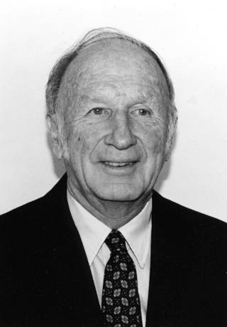

Chaos theory · interactive notes
The Lorenz attractor

In 1961 the meteorologist Edward Lorenz reran a weather simulation and, to save time, typed in a starting value rounded from 0.506127 to 0.506. He expected the same weather. After a few simulated months the two runs had nothing in common. Two years later he reduced the problem to three equations, a stripped-down model of air heated from below:
dx/dt = σ (y − x)
dy/dt = x (ρ − z) − y
dz/dt = x y − β zwith σ = 10, ρ = 28, β = 8/3
This page repeats his accident. Two trajectories, A and B, start at almost the same point and obey exactly the same equations.
Top chart, the attractor. Horizontal: x. Vertical: z. No time axis: the dots are the present, the lines are the last 30 time units.
Bottom chart, x against time, last 40 time units. Above zero is the right wing, below zero the left wing.
What the values mean
- x, y, z
- The three numbers that describe the state of the model at any instant. In Lorenz's convection model, x is how fast the air is turning over, y is the temperature difference between rising and sinking air, and z measures how far the vertical temperature profile is from a straight line.
- Top chart
- A map of the state with no time axis. Horizontal is x, vertical is z, and y points towards you, so it is hidden. Time shows up only as movement.
- Bottom chart
- The same motion with a time axis. Horizontal is time and vertical is x alone. Each loop around a wing is one ripple, and each crossing of zero is a jump from one wing to the other.
- Trajectory A
- The reference run.
- Trajectory B
- Starts at the same point as A, shifted in x by the initial difference. Nothing else is different.
- Initial difference
- The gap in x between A and B at time 0. The slider goes from 0.1 down to 0.0000000001.
- Playback speed
- How fast the run is played back. It does not change the result.
- Time
- Model time, in the equations' own units. The run ends at 200.
- Distance between A and B
- The straight-line distance between the two dots in x, y, z space. For scale, the whole butterfly is about 40 units wide.
- Split at time
- The first moment that distance passes 1. It is marked with a dotted vertical line on the bottom chart.
Source: E. N. Lorenz, “Deterministic nonperiodic flow”, Journal of the Atmospheric Sciences 20, 130–141 (1963). Integrated here with a fourth-order Runge–Kutta method and a time step of 0.005. The code in this repository was generated with Claude (Anthropic).